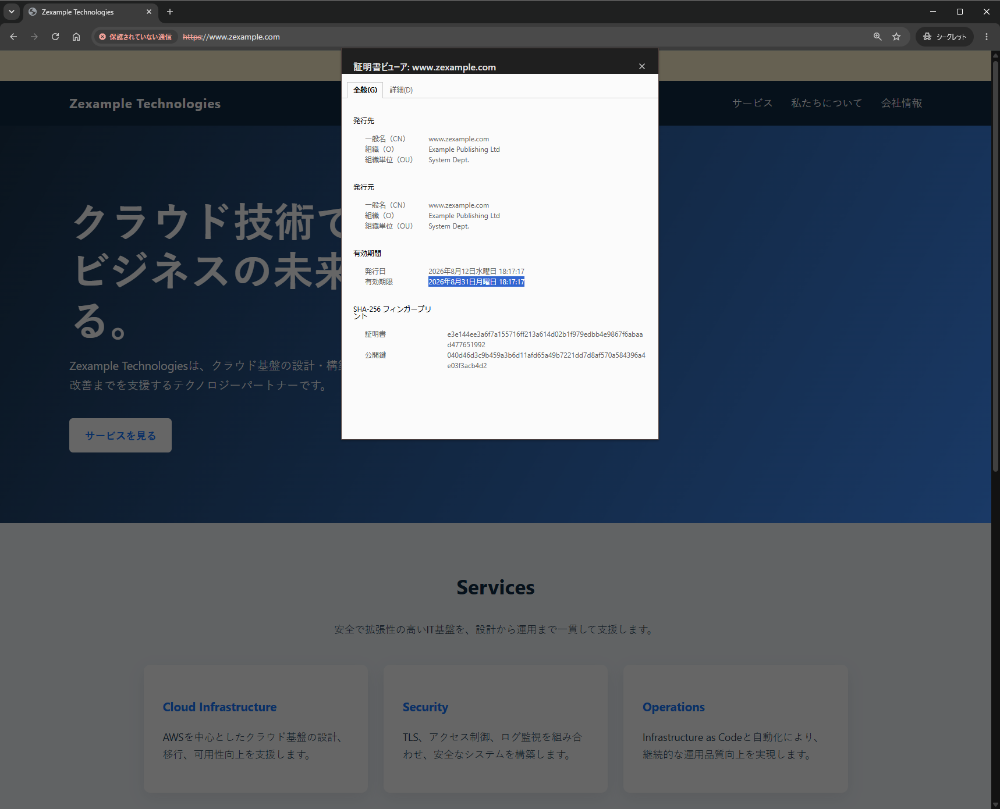
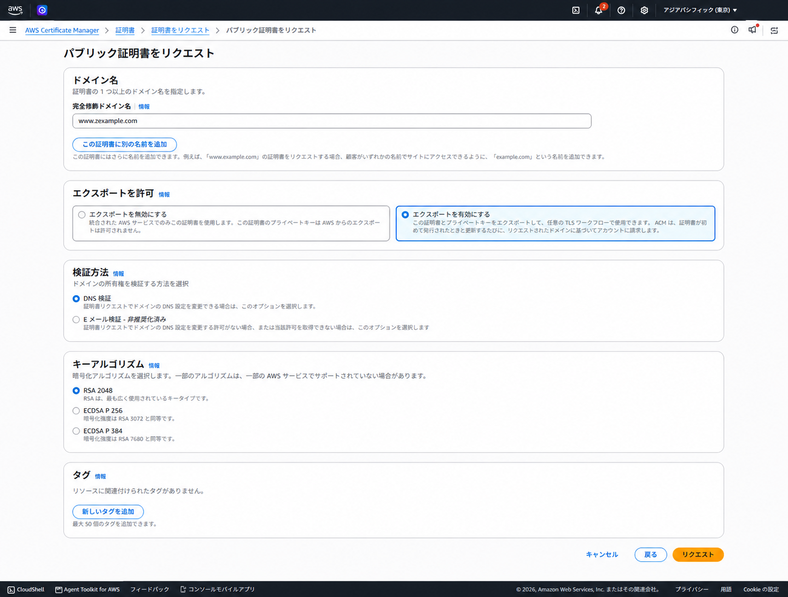
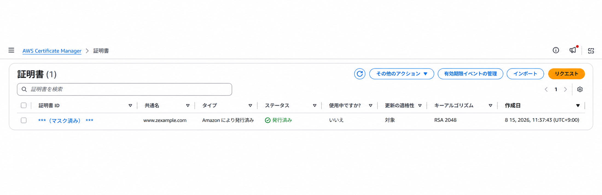
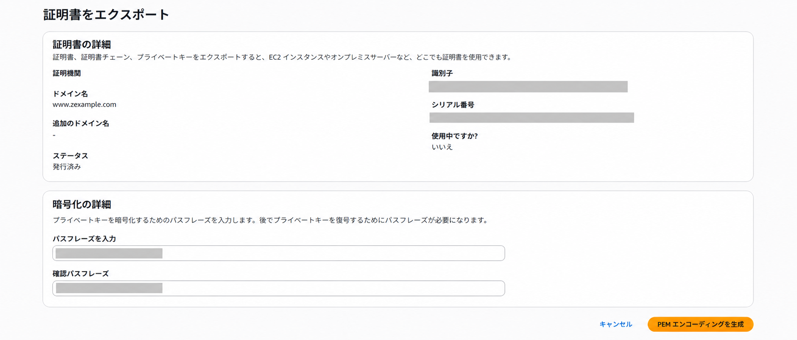
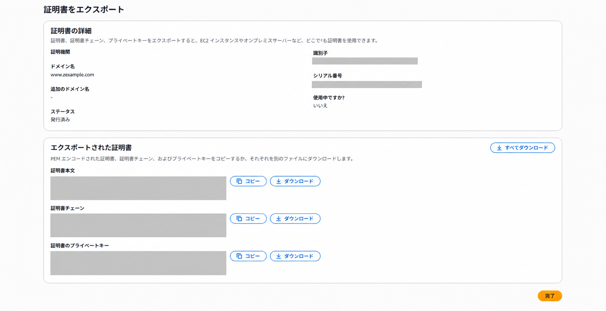
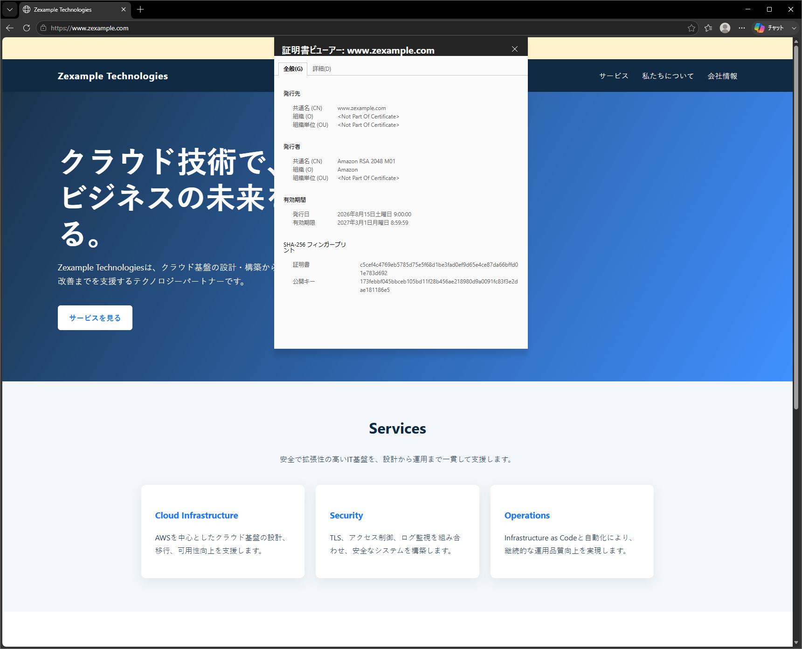

証明書更新（ACMエクスポート）
ACMで発行したエクスポート可能なパブリック証明書をRHEL 9上のApacheへ配置し、更新、再配置、TLS通信を確認する手順をまとめる
ACMがエクスポート可能な証明書を更新しても、EC2上のApacheやNGINXに配置した証明書ファイルは自動で差し替わらない
更新後の証明書を再エクスポートし、対象サーバーへ配置して、構文確認とサービス再読み込みを行う仕組みが必要
有効期間と今後の短縮
| 時期 | 公開TLS証明書の最大有効期間 | 運用への影響 |
|---|---|---|
| 2026年2月18日〜2027年3月14日 | ACMパブリック証明書は198日 | ACMは有効期限の45日前から更新を試行 |
| 2027年3月15日以降 | 100日未満 | 手動更新では作業頻度と期限切れリスクが高まる |
| 2029年3月15日以降 | 47日未満 | 発行、配置、確認、失敗通知を含む自動化が重要 |
既存の395日証明書は更新または有効期限まで引き続き利用できる。既存の398日証明書は有効期限の60日前に更新され、更新後は198日証明書へ切り替わる
ACMのACME機能で発行する証明書の有効期間は45日間。更新はACMEクライアントが行う。短期証明書では、更新処理の成否に加え、外部接続時にサーバーが実際に提示する証明書の有効期限も監視
1. ブラウザでの証明書確認
ブラウザで次のURLへアクセス
https://www.zexample.com/
Apacheが参照している証明書と秘密鍵のパス確認
grep -nE '^[[:space:]]*SSLCertificate(File|KeyFile|ChainFile|CACertificateFile)' /etc/httpd/conf.d/www.zexample.com.conf実行例を展開する
11: SSLCertificateFile /etc/pki/tls/certs/www.zexample.com.crt
12: SSLCertificateKeyFile /etc/pki/tls/private/www.zexample.com.key更新前の自己署名証明書におけるSubject、Issuer、有効期限、SHA-256フィンガープリント確認。公開用の実行例では所在地を<CITY>へ匿名化
openssl x509 -in /etc/pki/tls/certs/www.zexample.com.crt -noout -subject -issuer -dates -fingerprint -sha256実行例を展開する
subject=C=JP, ST=Tokyo, L=<CITY>, O=Example Publishing Ltd, OU=System Dept., CN=www.zexample.com
issuer=C=JP, ST=Tokyo, L=<CITY>, O=Example Publishing Ltd, OU=System Dept., CN=www.zexample.com
notBefore=Aug 12 09:17:17 2026 GMT
notAfter=Aug 31 09:17:17 2026 GMT
sha256 Fingerprint=E3:E1:44:EE:3A:6F:7A:15:57:16:FF:21:3A:61:4D:02:B1:F9:79:ED:BB:4E:98:67:F6:AB:AA:D4:77:65:19:92Apacheの稼働状態と80番・443番の待ち受け確認
systemctl is-active httpdss -lntp | grep -E ':(80|443)\b'実行例を展開する
LISTEN 0 511 *:80 *:* users:(("httpd",pid=***,fd=4))
LISTEN 0 511 *:443 *:* users:(("httpd",pid=***,fd=6))Apacheが更新前に提示している証明書の確認
openssl s_client -connect 127.0.0.1:443 -servername www.zexample.com </dev/null 2>/dev/null | openssl x509 -noout -subject -issuer -dates -fingerprint -sha2562. 更新前ファイルのバックアップ
VirtualHost設定、サーバー証明書、秘密鍵のバックアップ
cp -pi /etc/httpd/conf.d/www.zexample.com.conf /etc/httpd/conf.d/www.zexample.com.conf.$(date +%Y%m%d)cp -pi /etc/pki/tls/certs/www.zexample.com.crt /etc/pki/tls/certs/www.zexample.com.crt.$(date +%Y%m%d)cp -pi /etc/pki/tls/private/www.zexample.com.key /etc/pki/tls/private/www.zexample.com.key.$(date +%Y%m%d)3. ACMパブリック証明書のリクエスト
ACMの証明書リクエスト画面で選択した設定
| 項目 | 設定値 |
|---|---|
| 完全修飾ドメイン名 | www.zexample.com |
| エクスポート | 有効 |
| 検証方法 | DNS検証 |
| キーアルゴリズム | RSA 2048 |
www.zexample.com、エクスポート有効、DNS検証、RSA 2048を指定した証明書リクエスト画面
www.zexample.comの証明書が発行済みとなり、更新の適格性が対象であることを確認
使用中ですか？：いいえの表示
ACMコンソールの使用中ですか？は、証明書がACMと統合されたAWSサービスに関連付けられているかを示す項目
エクスポートした証明書をEC2上のApacheへ手動配置してもACMではいいえと表示されるため、Apacheで提示される証明書は後半のTLS通信確認で確認
4. ACM証明書のエクスポートとファイル配置
ACMの証明書エクスポート画面で、ユーザーが任意のパスフレーズを入力し、確認欄へ同じ値を入力
パスフレーズはエクスポートされる秘密鍵の暗号化と後の復号で使用するため、安全な方法で保管

PEMエンコーディングを生成を選択後、証明書本文、証明書チェーン、暗号化された秘密鍵を個別にダウンロード、またはすべてダウンロードを選択

ダウンロードした証明書本文、証明書チェーン、暗号化秘密鍵の保存
vi /etc/pki/tls/certs/www.zexample.com.crtvi /etc/pki/tls/certs/www.zexample.com-chain.pemvi /etc/pki/tls/private/www.zexample.com.key.enc| ACMの出力 | 保存先 |
|---|---|
| 証明書本文 | /etc/pki/tls/certs/www.zexample.com.crt |
| 証明書チェーン | /etc/pki/tls/certs/www.zexample.com-chain.pem |
| 暗号化秘密鍵 | /etc/pki/tls/private/www.zexample.com.key.enc |
5. 秘密鍵と証明書の確認
ACMエクスポート時に指定したパスフレーズによる秘密鍵の復号
openssl rsa -in /etc/pki/tls/private/www.zexample.com.key.enc -out /etc/pki/tls/private/www.zexample.com.key実行例を展開する
Enter pass phrase for /etc/pki/tls/private/www.zexample.com.key.enc:
writing RSA key復号したRSA秘密鍵の確認
openssl rsa -in /etc/pki/tls/private/www.zexample.com.key -check -noout実行例を展開する
RSA key okACM証明書のSubject、Issuer、シリアル番号、有効期限、SHA-256フィンガープリント確認
openssl x509 -in /etc/pki/tls/certs/www.zexample.com.crt -noout -subject -issuer -serial -dates -fingerprint -sha256実行例を展開する
subject=CN=www.zexample.com
issuer=C=US, O=Amazon, CN=Amazon RSA 2048 M01
serial=09B18CD903789CD6D3A3FDF04D041839
notBefore=Aug 15 00:00:00 2026 GMT
notAfter=Feb 28 23:59:59 2027 GMT
sha256 Fingerprint=C5:CE:F4:C4:76:9E:B5:78:5D:75:E5:F6:8D:1B:E3:FA:D0:EF:9D:65:E4:CE:87:DA:66:BF:FD:01:E7:83:D6:92証明書のSubject Alternative Name確認
openssl x509 -in /etc/pki/tls/certs/www.zexample.com.crt -noout -ext subjectAltName実行例を展開する
X509v3 Subject Alternative Name:
DNS:www.zexample.com6. ハッシュ値の整合性確認
RSA秘密鍵のmodulusにおけるSHA-256確認
openssl rsa -in /etc/pki/tls/private/www.zexample.com.key -noout -modulus | openssl dgst -sha256実行例を展開する
SHA2-256(stdin)= 7a344c38fb7c193e1d627d65b97402978595da9126b149a53a1d96de3b1834ffサーバー証明書のmodulusにおけるSHA-256確認
openssl x509 -in /etc/pki/tls/certs/www.zexample.com.crt -noout -modulus | openssl dgst -sha256実行例を展開する
SHA2-256(stdin)= 7a344c38fb7c193e1d627d65b97402978595da9126b149a53a1d96de3b1834ff秘密鍵とサーバー証明書で同じSHA-256を確認
サーバー証明書のIssuer DNハッシュ確認
openssl x509 -issuer_hash -noout -in /etc/pki/tls/certs/www.zexample.com.crt実行例を展開する
ad40cdd9証明書チェーン先頭のSubject DNハッシュ確認
openssl x509 -subject_hash -noout -in /etc/pki/tls/certs/www.zexample.com-chain.pem実行例を展開する
ad40cdd9サーバー証明書のIssuer DNと証明書チェーン先頭のSubject DNで同じハッシュ値を確認
7. 証明書チェーンの配置方式を確認
ACMから出力されるサーバー証明書、証明書チェーン、秘密鍵は別々のデータ
ApacheのVirtualHost設定ファイル（例：/etc/httpd/conf.d/ssl.conf）で、各ファイルをどのディレクティブから参照しているかを確認する
SSLCertificateFileへサーバー証明書、SSLCertificateChainFileへ中間証明書、SSLCertificateKeyFileへ秘密鍵をそれぞれ指定している構成では、fullchainへの結合は不要SSLCertificateFileだけでサーバー証明書と中間証明書を読み込む構成では、両方を結合したfullchainを作成する
| 配置方式 | Apache設定 | fullchainの作成 |
|---|---|---|
| 1ファイルで参照 | SSLCertificateFileへサーバー証明書と中間証明書を結合したファイルを指定 | 必要 サーバー証明書、中間証明書の順で結合 |
| 証明書チェーンを別ファイルで参照 | SSLCertificateFileへサーバー証明書、SSLCertificateChainFileへ証明書チェーンを指定 | 不要 既存設定で各ファイルを個別に参照 |
Apache 2.4.8以降は、SSLCertificateFileでサーバー証明書と中間証明書を1ファイルから読み込めるSSLCertificateChainFileは非推奨となっているため、本手順ではfullchainを作成してSSLCertificateFileへ指定する
fullchainへ含めるのはサーバー証明書と証明書チェーンだけ
秘密鍵はアクセス権を制限した別ファイルとしてSSLCertificateKeyFileへ指定する
fullchain方式を使用する場合は、サーバー証明書と証明書チェーンの存在を確認
test -s /etc/pki/tls/certs/www.zexample.com.crt && echo "サーバー証明書: OK"test -s /etc/pki/tls/certs/www.zexample.com-chain.pem && echo "証明書チェーン: OK"サーバー証明書、証明書チェーンの順でfullchainを作成
cat /etc/pki/tls/certs/www.zexample.com.crt /etc/pki/tls/certs/www.zexample.com-chain.pem > /etc/pki/tls/certs/www.zexample.com-fullchain.pemfullchainに含まれる証明書数の確認
grep -c 'BEGIN CERTIFICATE' /etc/pki/tls/certs/www.zexample.com-fullchain.pem実行例を展開する
38. Apache設定の更新
VirtualHost設定の証明書参照先をfullchainへ変更
vi /etc/httpd/conf.d/www.zexample.com.conf<VirtualHost *:80>
ServerName www.zexample.com
Redirect permanent / https://www.zexample.com/
</VirtualHost>
<VirtualHost *:443>
ServerName www.zexample.com
DocumentRoot /var/www/www.zexample.com/public_html
SSLEngine on
SSLCertificateFile /etc/pki/tls/certs/www.zexample.com-fullchain.pem
SSLCertificateKeyFile /etc/pki/tls/private/www.zexample.com.key
<Directory "/var/www/www.zexample.com/public_html">
Options -Indexes
AllowOverride None
Require all granted
</Directory>
ErrorLog /var/log/httpd/www.zexample.com-error.log
CustomLog /var/log/httpd/www.zexample.com-access.log combined
</VirtualHost>Apacheの構文とVirtualHost割り当て確認
httpd -thttpd -Shttpd -tではSyntax OK、httpd -Sでは80番・443番ともにwww.zexample.com.confへの割り当てを確認
Apache設定の再読み込み
systemctl reload httpd9. TLS通信確認
ホスト名、信頼チェーン、TLS通信の確認
openssl s_client -connect 127.0.0.1:443 -servername www.zexample.com -verify_hostname www.zexample.com -verify_return_error -CAfile /etc/pki/tls/certs/ca-bundle.crt </dev/null実行例を展開する
depth=2 C=US, O=Amazon, CN=Amazon Root CA 1
verify return:1
depth=1 C=US, O=Amazon, CN=Amazon RSA 2048 M01
verify return:1
depth=0 CN=www.zexample.com
verify return:1
Certificate chain
0 s:CN=www.zexample.com
i:C=US, O=Amazon, CN=Amazon RSA 2048 M01
a:PKEY: RSA, 2048 (bit); sigalg: sha256WithRSAEncryption
v:NotBefore: Aug 15 00:00:00 2026 GMT; NotAfter: Feb 28 23:59:59 2027 GMT
1 s:C=US, O=Amazon, CN=Amazon RSA 2048 M01
i:C=US, O=Amazon, CN=Amazon Root CA 1
2 s:C=US, O=Amazon, CN=Amazon Root CA 1
Verification: OK
Verified peername: www.zexample.com
New, TLSv1.3, Cipher is TLS_AES_256_GCM_SHA384
Verify return code: 0 (ok)10. 更新後のブラウザ確認
ブラウザで次のURLへアクセス
https://www.zexample.com/Amazon RSA 2048 M01、有効期間は2026年8月15日9時00分00秒から2027年3月1日8時59分59秒まで